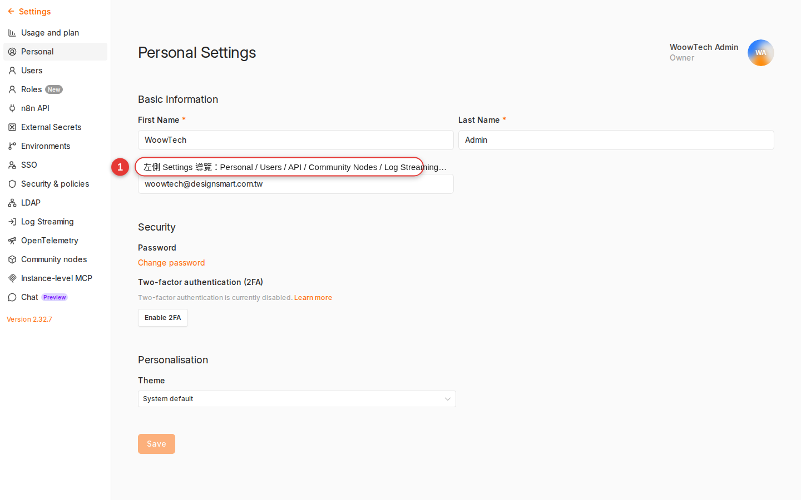

How it works underneath, for the curious
99% of n8n users will never need this appendix — dragging nodes onto the canvas and running workflows is enough. But the day you have to help the company decide "should we move to Cloud", "should we upgrade to Enterprise", "n8n is down, how do we fix it", "executions are filling the DB, now what" — this gives you a map of what runs underneath n8n, where the data sits, and how you can scale it. When you finish it you will have the vocabulary to talk to your IT and infra colleagues.
Who this appendix is for (most people can skip it)
If all you want is to build a few workflows in Woow n8n to automate your own work, you do not need this appendix. Chapter 1 already gives you the plain-language version of what n8n is; Chapter 13 covers credentials; Chapter 17 covers error handling. That is enough to get things done.
This appendix is written for a few kinds of reader:
- Anyone evaluating whether the company should move to n8n Cloud — you need to know where the line between self-hosting and Cloud sits.
- Decision-makers weighing the Enterprise edition — you need to know exactly which features the money buys.
- The IT / DevOps people called in to rescue n8n — n8n is down, the DB is full, an upgrade is due — you need to know what each process does, where the data sits, and how to back it up.
- Tinkerers who want to self-host an n8n at home to play with — you need to know what happens underneath once Docker is running.
.ee. belong to Enterprise and need a license key before they turn on. It is not a black box — which is why some people self-host and others happily pay for Cloud, and both roads work.
The three editions: Community vs Cloud vs Enterprise
n8n currently ships three editions, and the feature differences are below — this table is what decides whether you spend money:
| Edition | Community | Cloud | Enterprise |
|---|---|---|---|
| How you pay | Free, self-hosted | Monthly fee (by execution count) | Annual fee, negotiated with n8n |
| Where it is hosted | Your own server | n8n's own cloud | Your own server / your own K8s |
| Core features (nodes, Trigger, Expression) | All of them | All of them | All of them |
| Code node / AI Agent / Webhook | Yes | Yes | Yes |
| Templates gallery / community nodes | Yes | Yes | Yes |
| SSO (Google / Microsoft / SAML / LDAP) | No | Google/GitHub from Pro up; SAML needs Enterprise | Yes |
| RBAC (role-based access control) | Basic owner/member | Basic | Fine-grained roles + Project isolation |
| Audit log (who changed what) | No | No | Yes |
| Log Streaming (ship logs to an external system) | No | No | Yes |
| Version Control (workflows versioned in Git) | No | No | Yes |
| Multi-environment (staging / production) | No | No | Yes |
| SLA and official support | No (community forum) | Yes | Yes |
| Who it suits | Strong technical teams that want to save money and can fix things themselves | Teams under 10 people who do not want to run infra | Enterprise compliance needs, large teams, SSO and audit |
n8n.io/pricing.Which edition Woow n8n runs
WoowTech's internal n8n (n8n.woowtech.io) is a self-hosted Community edition — it sits on the company's own server, runs in Docker, and faces the outside world through a Cloudflare tunnel.
- Upside: free, all the data stays inside the company, any setting is ours to change, any experimental flag is ours to turn on.
- Price: no SSO (we use the built-in username and password today), no audit log, upgrades done by hand by IT, faults we debug ourselves.
- Whether there is an Enterprise license: it moves with WoowTech's current size and needs — ask IT directly if you need to know. With Enterprise you also get SSO / RBAC / environment switching.
The process architecture: main / worker / webhook
When n8n runs, what sits underneath is not "one big program" — it can be split into processes with different roles. That is what makes it scalable.
| Process | What it does | When it exists |
|---|---|---|
| main | The web UI, the REST API, the workflow orchestrator (what runs, and how far it got), and the schedules for Trigger nodes | Always (a single instance = everything runs here) |
| worker | Runs workflows and nothing else (this is the one that actually runs the nodes) | Only split out once Queue mode is on |
| webhook | Receives the incoming HTTP requests for webhooks and nothing else | Optionally split out in Queue mode |
By default (Regular mode) there is only one main process and it does the whole job on its own — UI, API, scheduling, running workflows, receiving webhooks. For a small deployment (<50 workflows, <1000 executions a day) that is enough.
Once you have more workflows and one of them runs long enough to block the whole box, it is time to consider Queue mode (see §Queue mode below): the main process only handles the UI and scheduling, the actual workflow runs go to workers, and receiving webhooks is split off to a webhook process. All three roles scale horizontally on their own.
Choosing a database: SQLite / Postgres / MySQL
n8n needs a DB to store workflows, credentials and executions. All three are supported:
| DB | Benefit | Downside | When to use it |
|---|---|---|---|
| SQLite (default) | One file, zero configuration, backup is just copying the file | Single machine, cannot be shared, heavy writes lock the table; not suitable for Queue mode | Development, demos, small teams (<5 people, <500 executions a day) |
| Postgres | The production standard, good performance, can be shared, supports Queue mode | You have to run another box or use a managed service | Production, Queue mode, multiple instances, enterprise deployments |
| MySQL / MariaDB | Also supported | Relatively few users, weaker community support, n8n recommends Postgres | Only worth it when the company has nothing but MySQL DBAs already |
You configure the DB through environment variables:
DB_TYPE=postgresdb
DB_POSTGRESDB_HOST=postgres.internal
DB_POSTGRESDB_PORT=5432
DB_POSTGRESDB_DATABASE=n8n
DB_POSTGRESDB_USER=n8n_user
DB_POSTGRESDB_PASSWORD=***n8n export:workflow and export:credentials, switch the DB, then import. Swapping the DB halfway is a classic beginner trap; always go through the export/import flow.Where the important data lives
Knowing where the data sits is what gives you a starting point for backup, restore and debugging. Here is where n8n's main data lives:
| Data type | Where it lives | Backup notes |
|---|---|---|
| Workflow definitions (node structure, connections) | The workflow_entity table in the DB |
Backed up with the DB |
| Credentials (usernames and passwords, OAuth tokens) | The credentials_entity table in the DB, stored encrypted |
DB backup + the encryption key must be backed up separately |
| Executions (one record per run) | The execution_entity table in the DB (plus each node's output) |
The biggest consumer of DB space; prune before you back up |
| Users / accounts | The user table in the DB |
Backed up with the DB |
| Encryption key (the key that decrypts credentials) | The N8N_ENCRYPTION_KEY environment variable (in Docker, .env) |
Must be backed up separately and kept offline — without it no credential can be opened |
| Static / user data (binary files, logs) | The file system: ~/.n8n/ by default, or the Docker volume /home/node/.n8n |
Back up the whole mounted volume |
N8N_ENCRYPTION_KEY = every credential is shut for good. Your workflows are still there and the UI still opens, but every credential turns into garbage. This is one of the easiest disasters to hit in n8n: you move machines, take the DB, and forget the .env. A discipline you enforce: keep two copies of the encryption key — one in the server's .env, one in a password manager (or the company's encrypted vault).Execution data growth: ignore it and it fills the database
Every workflow run creates one execution_entity row — add each node's input / output data and a single run can be a few hundred KB. Run that for a few months and your DB grows enough to give you a fright.
Chapter 17 mentioned EXECUTIONS_DATA_MAX_AGE; here is the whole set of pruning environment variables:
| Environment variable | What it is for | Suggested value |
|---|---|---|
EXECUTIONS_DATA_PRUNE |
Whether old executions are cleared automatically | true (always turn it on) |
EXECUTIONS_DATA_MAX_AGE |
How many hours to keep (anything older is cleared) | 336 (14 days) |
EXECUTIONS_DATA_PRUNE_MAX_COUNT |
How many records to keep at most | 10000 |
EXECUTIONS_DATA_SAVE_ON_ERROR |
Whether to store detailed data on failure | all (handy for debugging) |
EXECUTIONS_DATA_SAVE_ON_SUCCESS |
Whether to store detailed data on success | all or none (depending on DB space) |
You can also override the global setting inside a single workflow's Settings — for example, a workflow that runs every minute can be set to "store no data on success" and keep records only for failures, which saves a great deal of space.
DELETE FROM execution_entity WHERE "startedAt" < NOW() - INTERVAL '30 days'; and remember to VACUUM FULL afterwards (it locks the table, so pick an off-peak window).Queue mode: scaling further
When you have more and more workflows, one of them takes 5 minutes per run, and everything else is stuck behind it — that is when you need Queue mode.
What Queue mode does
-
The main process only handles the UI and scheduling
It no longer runs workflows itself; instead it drops "what should run" onto a Redis queue.
-
Worker processes take jobs off the queue and run the workflows
You can start N workers and the jobs are distributed automatically. One worker running long does not matter; the others keep picking up new jobs.
-
A webhook process (optional) receives webhooks and nothing else
Splitting webhooks off from main stops a slow UI from making webhooks slow too.
What you need to turn Queue mode on
- Redis (as the queue broker) — run another box or use a managed one.
- Postgres — SQLite cannot be shared, so several workers cannot read the same data.
- Environment variables:
# main
EXECUTIONS_MODE=queue
QUEUE_BULL_REDIS_HOST=redis.internal
QUEUE_BULL_REDIS_PORT=6379
DB_TYPE=postgresdb
# ... other DB settings
# worker (a separate container / process)
EXECUTIONS_MODE=queue
QUEUE_BULL_REDIS_HOST=redis.internal
# ... the same DB and Redis settings
# start command: n8n workerBackup and restore strategy
n8n backups have three layers, and only backing all of them up counts as complete:
| What to back up | How to back it up | Frequency |
|---|---|---|
| DB (workflows / credentials / executions / users) | Postgres: pg_dump n8n > backup.sql. SQLite: copy the database.sqlite file (run docker compose stop first) |
Daily |
.env / environment variables (including N8N_ENCRYPTION_KEY) |
Copy the file; keep one copy of the encryption key in a password manager | Whenever a setting changes; the encryption key only needs backing up once |
| Workflow JSON (for version control, optional) | CLI: n8n export:workflow --all --backup --output=./workflows/. One JSON file per workflow |
As needed (push to Git weekly / daily) |
| User data files (binary uploads, custom nodes) | Back up all of ~/.n8n/ or the Docker volume |
Weekly, or whenever something changes |
The right order to restore in
-
Stop n8n first
docker compose stop n8n— this keeps anything from writing during the restore. -
Restore the DB
Postgres:
psql n8n < backup.sql. SQLite: copydatabase.sqliteback over the top. -
Check that
N8N_ENCRYPTION_KEYmatchesThis is the most critical step in a restore — the new environment's encryption key has to be exactly the one in place when the backup was taken, or the credentials will not open. Change it and you are done for.
-
Start n8n and verify
docker compose up -d n8n, then sign in, open a workflow and run it manually once to confirm the credentials work. When something fails it is usually the encryption key not matching.
n8n export:workflow --backup in Git is an excellent second line of defense — even if the DB is destroyed and the encryption key is lost, the workflow structure survives (the credentials have to be set up again). The Enterprise edition has a Version Control feature that pushes automatically; on Community you can cron a daily export + git push.Upgrade strategy: never upgrade on a Friday
n8n iterates fast (there is a small release almost every week). Upgrades mostly go smoothly, but there is the occasional breaking change. The steps:
-
Try it in a staging environment first
Pull a copy of the production DB into staging, upgrade, and run each of your main workflows once. Do not upgrade production directly.
-
Read the changelog for breaking changes
github.com/n8n-io/n8n/releases— watch major versions in particular (0.x → 1.x is a big deal) and anything markedBREAKING. A node going from v1 to v2 often renames fields too. -
Take one backup (however confident you are)
Run the whole §backup set above. It is the last safety net before an upgrade.
-
Stop the workflows → upgrade → bring it back up
Docker users:
docker compose pull && docker compose up -d(if the tag islatest). Manual installs:npm install -g n8n@latest. -
Check the UI and run a test workflow
Sign in, open a workflow, and Execute it manually once. If something fails, read the log first (
docker logs n8n).
latest tag every Docker pull takes the newest build — for production, pin the version (for example n8nio/n8n:1.60.2) so nothing upgrades itself while you are not looking. When you do want to upgrade, change the tag deliberately and upgrade once.Monitoring: how you know n8n is still alive
A production n8n needs basic monitoring — otherwise it dies in the middle of the night and nobody knows. A few approaches, from simple to complex:
| Approach | What you need | What you can see |
|---|---|---|
Cron a call to /healthz (or /healthz/readiness for more) |
Any uptime monitor (UptimeRobot, cron + curl, WoowTech's internal Uptime Kuma) | /healthz only proves the process is alive (HTTP 200); /healthz/readiness also checks that the DB is connected and the migrations have finished. Queue mode workers do not expose healthz by default — you need QUEUE_HEALTH_CHECK_ACTIVE=true. |
| Watch the Executions page | Open a browser by hand or on a cron | Whether any workflow keeps failing (the Executions section of Chapter 17) |
| Error workflow notifications | Every production workflow bound to an error workflow | A Slack/email notification the moment one workflow dies (covered in Chapter 17) |
| Prometheus metrics (Community has them too) | The N8N_METRICS=true environment variable, no license needed |
Execution counts, latency, queue length, event bus and other metrics — feed them to Grafana for charts |
| Log Streaming (Business / Enterprise) | A paid-plan feature | Ship every log to Loki / Datadog / Splunk for central analysis |
/healthz + every workflow with an error workflow that notifies Slack" — one catches "n8n is down", the other catches "n8n is alive but one workflow died". Those two layers cover most failure scenarios.Common architecture pitfalls
When the problem is not your workflow logic but n8n itself, these are the ones you meet most:
| Symptom | Likely cause | How to fix it |
|---|---|---|
| The main process is stuck, no workflow runs, and the UI is slow too | One workflow runs so long it fills the CPU / memory; the single-threaded bottleneck of Regular mode | First check whether a workflow is in an infinite loop or loading too much data; the longer-term answer: more CPU / memory; the real cure: turn on Queue mode and split off workers |
| The DB is out of space and n8n writes slowly or not at all | execution_entity was never pruned; the SQLite file is already tens of GB |
Set EXECUTIONS_DATA_PRUNE=true and a max age first; clear the old executions by hand; the longer-term answer: move to Postgres |
| After an upgrade a workflow will not open and a node has a red border | A community node is incompatible with the new version, or that node's fields were renamed | Stay on the old version, and check whether the community node supports the new one before you upgrade; if you have upgraded already, update that community node or switch to an official node |
| After a move to a new machine every credential fails (401 / decrypt error) | N8N_ENCRYPTION_KEY was left behind or does not match |
Find the old machine's encryption key (.env or ~/.n8n/config), paste it on the new machine and restart. If it really is lost, every credential has to be rebuilt |
| Queue mode workers pick up no jobs and the queue keeps piling up | The worker is not connected to Redis, or the DB connection string is wrong, or the worker never started at all | Read the worker container log; use redis-cli to check the contents of the bull:jobs:* queue; confirm that main and worker use the same Redis and DB |
| Webhooks sometimes do not arrive, sometimes are slow | The main process is stuck running workflows too; or the CF tunnel is playing up | Split off a webhook process (a Queue mode option); check the CF tunnel log; call the webhook URL directly with curl to rule out the network in between |
n8n keeps restarting and the log shows SQLITE_BUSY |
Several processes write to SQLite at once (not supported); or the disk is failing | On a single machine do not turn on Queue mode (that gives you two writers); move to Postgres longer-term; check the disk's SMART status first |
| All the workflows disappear after a Docker image upgrade | The Docker volume is not mounted correctly and n8n reads a brand-new empty DB | Check docker-compose.yml: ~/.n8n or /home/node/.n8n has to be mounted to a persistent volume, not created fresh on every start |
FAQ
Cloud vs self-host — which is cheaper? Which should we pick?
Does the Community edition have SSO? Our IT says SSO is mandatory before we can go live.
Does n8n support Kubernetes?
github.com/n8n-io/n8n-hosting, in the charts/n8n directory, and is published to the GHCR OCI registry, so you can install it directly: helm install n8n oci://ghcr.io/n8n-io/n8n-helm-chart/n8n -f my-values.yaml. The same repo also carries Docker Compose, a Caddy reverse proxy, AWS CloudFormation (ECS Fargate + RDS + ElastiCache) and other templates. For production, go with Queue mode + Postgres + Redis; the chart has all of it templated for you. Single-machine Docker Compose is the way in, K8s is where you scale for real.How do we contribute back to n8n? We found a bug / want to write a community node.
github.com/n8n-io/n8n/issues, with the smallest workflow JSON that reproduces it. (2) Feature request: post on the official community forum community.n8n.io under the ideas category, where others vote and n8n reviews. (3) PR: fork the GitHub repo and edit it directly — read CONTRIBUTING.md. (4) Community node: package your integration as an npm module so others can npm install n8n-nodes-yourthing. Official docs: docs.n8n.io/integrations/community-nodes/build/. (5) Discord: discord.gg/n8n has n8n staff and an active community, including a Chinese-speaking corner.Is the source code the same in the Community and Enterprise editions?
.ee. and only turn on with a license key. What you clone from GitHub is the complete Community edition; upgrading to Enterprise means getting a key — no new image, and no data to move.Does turning on Queue mode scramble the order workflows run in?
Do I have to restart n8n after changing an environment variable?
.env to set a new EXECUTIONS_DATA_MAX_AGE and n8n has to restart before it takes effect (docker compose restart n8n). One caution: some settings affect data compatibility when you change them (switching DB type or encryption key, for example), so back up and read the docs before you touch them.I want to set one up at home to play with — what is the simplest way to self-host?
docker-compose.yml (docs.n8n.io/hosting/installation/docker/) that is basically an n8n container plus a persistent volume, up and running in 5 minutes. If you want to reach it from the public internet, pair it with Cloudflare Tunnel or Tailscale (no open port needed). Lazier still: Railway / Render / Fly.io all have a one-click n8n template that deploys in 2 minutes. Play with it first, then decide whether to add Postgres and turn on Queue mode.